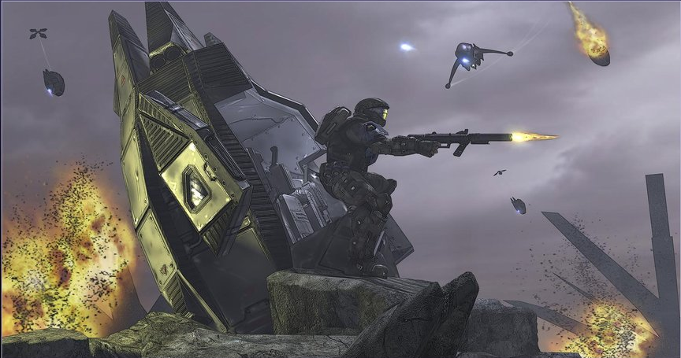
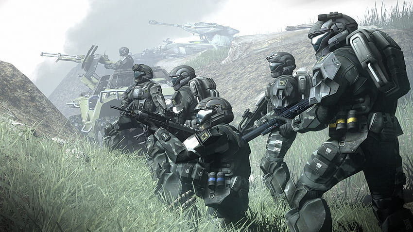
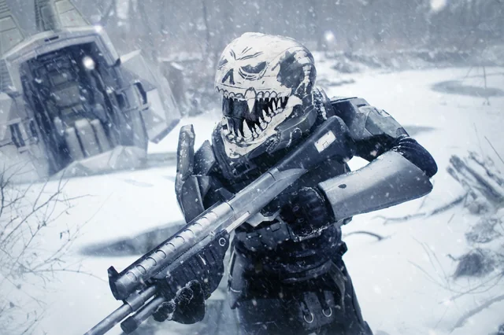
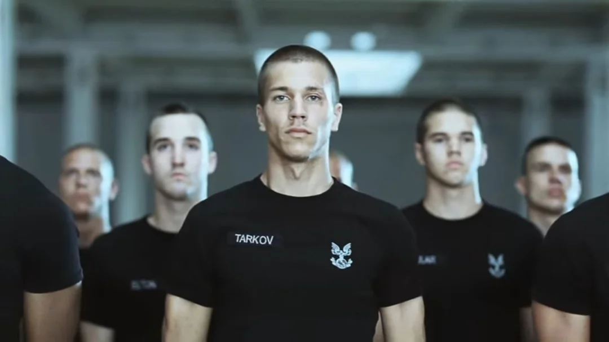
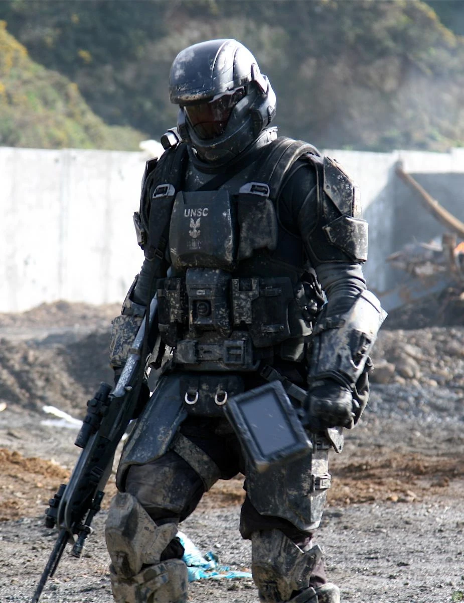
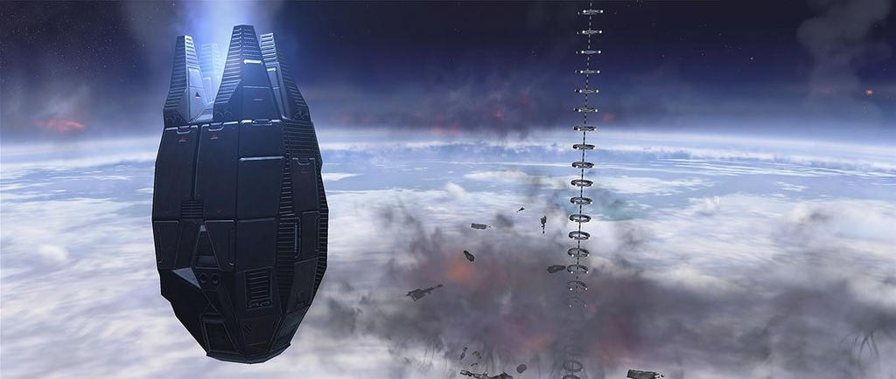

Introduction and History
The concept of deploying highly trained troops behind enemy lines by literally dropping them from orbit and giving a middle finger to newton by surviving, originates from 20th and 21st-century paratroopers. Despite mixed success, they proved the effectiveness of such tactics in large-scale warfare. The United Nations initiated the concept in 2129, originally known as Drop Jet Platoons. The modern Orbital Drop Shock Troopers (ODSTs) emerged in 2163 with the formation of the UNSC Marine Corps. That year marked the first extraterrestrial deployment of UNSC Marines during the Mars Campaign against the Koslovic terorists. After the Interplanetary War ended in 2170 with the signing of the Callisto Treaty, the ODSTs saw little action as Earth faced postwar challenges like overpopulation and famine.
Insurrection
The ODSTs re-emerged in 2490 during the civil conflict between the Unified Earth Government and Insurrectionists. Using members of the ORION Project as models, they enhanced their reputation and training. Leading up to 2525, they conducted high-risk operations to thwart Insurrectionist activities, aiming to prevent attacks on civilians, and to disrupt enemy supply lines. The 10th Shock Troops Battalion was deployed to various locations, including Jericho VII, Arcadia, and Andesia, to combat Insurrectionist forces. During these operations, they faced fierce resistance and suffered many casualties.
Human-Covenant War
With the Covenant attack on Harvest in 2525, the ODSTs shifted their focus to this new alien threat. They prepared for critical engagements and high-risk missions throughout the war. In 2526, ODSTs were deployed to the Corbulo Academy on Circinius IV during a Covenant assaults. They participated in early battles against the Covenant, such as the Battle of Hat Yai and the Battle of Arcadia, assisting in defending key locations and facilitating civilian evacuations ect. The ODSTs launched assaults to reclaim planets from Covenant occupation, demonstrating their resilience and strategic importance. Following the enactment of the Cole Protocol in 2535, ODST teams were tasked with securing navigation data to protect Earth's location. They engaged in numerous operations, including the Battle of Jericho VII, missions on Heian, Skopje, Sigma Octanus IV, New Jerusalem, Tribute, and Ariel. The Fall of Reach in 2552 was a significant moment, where many ODSTs lost their lives defending the planet.
Battle for Earth

(image captired from secutity cam of PO1 Jack Morales leading civilian evacuation of New Mombasa)
After the loss of Reach, the ODSTs fought in the pivotal Battle for Earth in October 2552. They engaged Covenant forces on orbital platforms but faced severe losses as stations like Malta and Athens were destroyed. ODST teams attempted to board the Prophet of Regret's carrier over New Mombasa but were largely unsuccessful due to the carrier's sudden slipspace jump. The defense of Earth saw ODSTs battling across the globe and in space against overwhelming Covenant forces. In November 2552, they participated in various critical operations. Notably, two ODSTs from the 2nd Shock Troops Battalion aided in locating Spartan John-117 after his crash landing on Earth, a mission that proved essential for coordinating Earth's defenses. one of the two gave his life to ensure the mission's sucsess CPL T.Rymann took up a sniper position to buy his fellow ODST PVT S.Hartley time to lock on to the Master Chief's signal in doing so he was flanked and killed by a brute cheiftain.
Roles and Operations
(image captured from Pvt dimytry's pod-cam of GySGt Frank Mitchell emerging from his drop pod under fire after landing on Tribute.)
Serving as the rapid reaction force of the UNSC Marine Corps, Orbital Drop Shock Troopers are distinguished by their unconventional deployment method known as "transorbital support interdiction." This involves dropping troopers to a planet's surface aboard small, purpose-built deployment vehicles. This approach allows them to conduct a variety of missions against targets that conventional forces cannot approach undetected. Trained for any kind of landing operation, ODSTs expect to arrive in hellish conditions and engage in incredibly difficult combat zones. Deployment via Single Occupant Exoatmospheric Insertion Vehicles (SOEIVs) is often considered more effective than traditional dropship methods. It enables spacecraft to make quick passes over a planet and deploy hundreds of ODSTs rapidly. Since they are deployed individually rather than together in one ship, the casualty rate is lower compared to conventional dropship deployments. Each ODST combat team specializes in particular mission sets but is expected to be adaptable to any situation. ODSTs drop from orbit onto terrestrial environments, often landing behind enemy lines. They are tasked with eliminating enemy units and clearing landing zones for following troops. ODSTs also serve as the primary special forces raiding unit of the Marines, deployed to tip the scales in close battles, raid enemy bases, capture strategically valuable points, and eliminate high-value targets. Similar to their infantry counterparts, ODST units of varying strength are stationed aboard many UNSC vessels and installations.
Specialized Operations Performed by ODSTs:
- Deep Ground Surveillance (DGS) and Long-Range Reconnaissance: Conducting patrols in small groups, usually far behind enemy lines. While they may direct air or artillery strikes against enemy positions, their primary goal is to remain unobserved, focusing on intelligence gathering rather than direct combat.
- Direct Action (DA): Executing short-duration strikes and other small-scale offensive actions in hostile or politically sensitive environments. These operations employ specialized military capabilities to seize, destroy, capture, exploit, recover, or damage designated targets. Direct action missions carry higher physical and political risks and require precise use of force to achieve specific objectives.
- Unconventional Warfare: Engaging in military and paramilitary operations, often of long duration, conducted by indigenous or surrogate forces organized, trained, equipped, supported, and directed by an external source. This includes guerrilla warfare, covert operations, subversion, sabotage, intelligence gathering, and escape and evasion tactics.
- Counter-Terrorism Operations: Responding to terrorist threats and acts, both real and perceived, to neutralize potential dangers.
- Counter-Contraband Operations: Undertaking missions to recapture smuggled or stolen goods, disrupting enemy supply lines and illegal activities.
- Personnel and Special Equipment Recovery/Capture: Recovering and providing medical treatment to friendly personnel in combat environments, as well as capturing high-value individuals and securing critical equipment.
Organization
Under the operational authority of the Naval Special Weapons division of UNSC Special Forces, the Orbital Drop Shock Troopers (ODSTs) are a special operations unit within the UNSC Marine Corps. While not embedded within conventional UNSC forces, ODST units participate in joint operations and act as force multipliers, enhancing the effectiveness, morale, and willingness of those they fight alongside. There are at least four divisions of ODSTs, with the 105th Shock Troops Division being the most notable, as well as the 65th Shock Troops Division. The ODSTs also maintain Special Purpose Forces—a subset with additional training and equipment that enables them to operate in unique and challenging environments. Among these are the Air Assault units, nicknamed "Bullfrogs," who are trained as urban warfare specialists. The number of ODST combat teams varies from company to company but generally consists of six to eight teams, each specializing in a particular mission set. Every ODST combat team includes between ten and fourteen members, each with a specific skill or function. ODSTs are also organized into fireteams of six to eight personnel. While each team and individual is expected to excel in their specialized skills and assigned missions, they are also expected to be flexible enough to adapt to any situation. Each ODST unit's equipment is tailored for specific missions and tasks, with operators proficient in a wide range of weapons, sensors, and mobility systems optimized for hazardous and difficult environments.
(image from base secutity cam of CPO yuri petrov heding to rally point after landing on Reach during the Castle Base assault.)
Training
Orbital Drop Shock Troopers undergo months of intense training beyond their previous military experience. Initially, candidates focus on physical fitness for three weeks, enduring daily runs, push-ups, and numerous obstacle courses that include simulations with slush, artificial snow, and live-fire exercises. They are trained to crawl for miles through environments filled with barbed wire, rubble, and destroyed buildings while instructors fire rounds just above their heads. Additionally, trainees practice jumping from high positions to prepare for transorbital drops. This rigorous process also serves to identify and remove those unfit to become ODSTs; candidates who cannot meet the standards are returned to their previous units. Following physical conditioning, the next phase emphasizes squad tactics with a strong focus on teamwork. Candidates don full ODST training gear and are given weapons loaded with tactical training rounds (TTRs). They are then dropped at the base of a mountain and ordered to reach the peak alongside their drill instructor. Instructors may occasionally shoot trainees in the leg with TTRs, causing temporary paralysis, which forces slower candidates to crawl the rest of the way. The exercise is often repeated with added challenges, such as trainers acting as opponents armed with TTR-loaded weapons. Some trainees serve as distractions to help their peers eliminate adversaries. After mastering squad tactics, candidates receive advanced tactical training in fireteams. They face similar challenges but must now work closely within their teams to reach objectives. Once proficient individually, squad tactics are reintegrated, with multiple fireteams collaborating to achieve their goals, providing mutual support and suppressing opponents. The ODSTs have a dedicated training unit—the 340th ODST Combat Training Unit—which provides realistic combat environments for special forces personnel. Those with potential for Special Warfare assignments may be reassigned based on their capabilities. For example, Morgan Kinsano, an ODST, was reassigned to the Special Tactics and Equipment Group, leading the Firestorm Battle Group—a specialized unit focused on anti-infantry operations.
Equipment
Battle Dress Uniform
The ODST battle dress uniform is the signature equipment used by the Orbital Drop Shock Troopers. The armor is vacuum-rated and allows for extra-vehicular activity for up to fifteen minutes. The helmet, a derivative of the standard-issue CH252 model, is equipped with modern communications gear, a heads-up display, and motion trackers. It also includes the Visual Intelligence System, Reconnaissance (VISR), a proprietary integrated data management system that provides navigational data, access to certain infrastructure systems, and storage for mission content. Manufactured by Misriah Armory, the ODST armor incorporates titanium composites in its plating to offer enhanced protection. The suit features a heating and cooling system capable of matching the infrared signature of the local weather conditions. There are several editions and variants of the armor, each designed with mission-specific functions.
Drop Pod
The ODSTs' iconic deployment method is the drop pod—a teardrop-shaped vehicle protected by a ceramic skin coating. Known for its risks and intense heat during descent, this method has earned the 105th ODST Division the nickname "Helljumpers." While most combat deployments use conventional dropships, the drop pod was designed as a more efficient means of orbital insertion for high-risk operations. Often launched from orbiting spacecraft or space stations, drop pods are equipped with the occupant's weapons, ammunition, and other supplies. Upon landing, each ODST is responsible for retrieving supplies from their Single Occupant Exoatmospheric Insertion Vehicle (SOEIV) and transporting them to their unit's temporary base.